Lecture 23: Genome Assembly
Learning Objectives
By the end of this lecture, you will be able to:
- Explain why genome assembly is like solving a puzzle without the picture on the box
- Define k-mer composition and coverage
- State the three laws of assembly
- Construct overlap graphs and de Bruijn graphs from k-mer collections
- Distinguish Hamiltonian paths from Eulerian paths and explain why the latter are computationally tractable
- Explain how k-mer size and read length affect repeat resolution
- Define contig, scaffold, and N50
1. The Assembly Problem
Genome assembly is reconstructing a genome sequence from sequencing reads—without knowing what the answer looks like. It is analogous to assembling a jigsaw puzzle without the picture on the box [1].
Whole-genome shotgun sequencing works by copying the input DNA many times, then randomly fragmenting all copies into short pieces (reads). The term “shotgun” refers to this random fragmentation—as if the genome was blasted apart. Our task: take the resulting pile of fragments and reconstruct the original sequence.
CTAGGCCCTCAATTTTT
CTCTAGGCCCTCAATTTTT
GGCTCTAGGCCCTCATTTTTT
CTCGGCTCTAGCCCCTCATTTT
TATCTCGACTCTAGGCCCTCA <- Reads (Given)
TATCTCGACTCTAGGCC
TCTATATCTCGGCTCTAGG
GGCGTCTATATCTCG
GGCGTCGATATCT
GGCGTCTATATCT
-----------------------------------
??????????????????????????????????? <- Genome (Unknown)2. K-mer Composition
Genomes are strings of text. Sequencing generates reads—substrings of the genome. For simplicity, assume all reads have the same length \(k\). The k-mer composition of a genome is the collection of all its length-\(k\) substrings.
For the short “genome” TATGGGGTGC with \(k = 3\):
\[ Composition_3(\texttt{TATGGGGTGC}) = \texttt{ATG, GGG, GGG, GGT, GTG, TAT, TGC, TGG} \]
We list k-mers in lexicographic (alphabetical) order because a sequencing machine does not produce reads in any particular order—we do not know where each read came from in the genome.
3. Assembly by Overlap
Given a scrambled collection of k-mers, we try to reconstruct the genome by tiling k-mers that overlap in \(k-1\) nucleotides. Consider these five 3-mers:
\[ \texttt{AAT ATG GTT TAA TGT} \]
Tiling them by their overlaps:
TAA
AAT
ATG
TGT
GTT
-------
TAATGTTThis works perfectly for simple cases. But what happens with repeats? Consider a larger 3-mer collection:
\[ \texttt{AAT ATG ATG ATG CAT CCA GAT GCC GGA GGG GTT TAA TGC TGG TGT} \]
The 3-mer ATG appears three times. Each ATG can be followed by TGC, TGG, or TGT—we don’t know which goes where. Choosing the wrong extension leads to a dead end or an incorrect assembly.
One successful tiling produces the “genome path”:
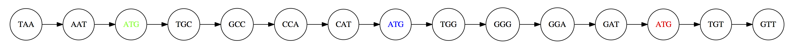
TAATGCCATGGGATGTT.4. Coverage
Coverage is the number of reads covering a given position in the genome. In this example:
TAA
AAT
ATG
TGT
GTT
-------
TAATGTT
0123456Position 0 has coverage 1, position 3 has coverage 3. The average coverage is total bases in reads divided by genome length: \(\frac{15}{7} \approx 2\times\).
A more realistic example with ~\(5\times\) coverage:
CTAGGCCCTCAATTTTT
CTCTAGGCCCTCAATTTTT
GGCTCTAGGCCCTCATTTTTT
CTCGGCTCTAGCCCCTCATTTT
TATCTCGACTCTAGGCCCTCA
TATCTCGACTCTAGGCC
TCTATATCTCGGCTCTAGG
GGCGTCTATATCTCG
GGCGTCGATATCT
GGCGTCTATATCT
-----------------------------------
GGCGTCTATATCTCGGCTCTAGGCCCTCATTTTTTAverage coverage: \(\frac{177}{35} \approx 5\times\).
5. The Three Laws of Assembly
The First Law: Overlaps Imply Co-location
If the suffix of one read matches the prefix of another, the two reads may originate from overlapping positions in the genome:
TCTATATCTCGGCTCTAGG <- read 1
|||||||||||||||
TATCTCGACTCTAGGCC <- read 2The match does not need to be perfect. Differences may arise from sequencing errors, allelic variation (in diploid organisms), or polymorphisms within a population of cells.
The Second Law: Higher Coverage Is Better
Higher coverage means more overlaps, longer overlaps, and fewer gaps:
TATCTCGACTCTAGGCCCTCA <- Low coverage (few reads)
-----------------------------------
GGCGTCTATATCTCGGCTCTAGGCCCTCATTTTTT <- Genome
-----------------------------------
TCTATATCTCGGCTCTAGG
GGCGTCTATATCTCG <- Higher coverage (many reads)
GGCGTCGATATCT
...The Third Law: Repeats Are Evil
Consider the string a_long_long_long_time. If we try to find the shortest superstring from its 6-mers, the greedy algorithm maximizes overlap and produces a_long_long_time—collapsing one repeat:
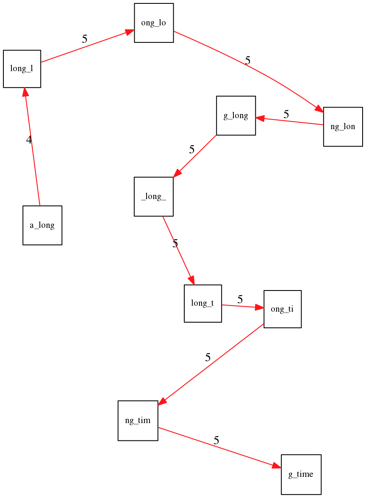
a_long_long_long_time. Maximizing overlap yields the wrong (shorter) answer.The correct path has a lower total overlap but produces the right string:
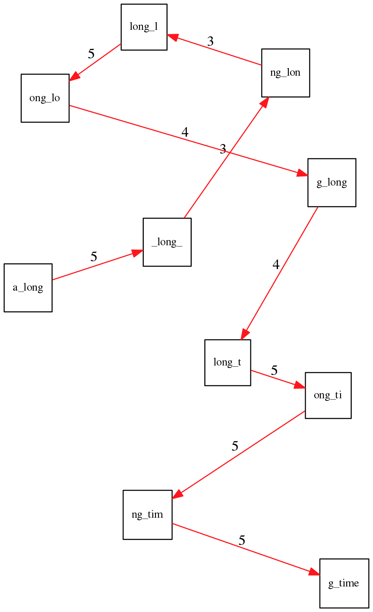
This is a fundamental problem: repeats shorter than the read length cannot be resolved. They produce ambiguous paths in the assembly graph.
6. Graph-Based Assembly
Finding overlaps between all reads defines a directed graph. Edges connect reads whose suffix matches another read’s prefix. The assembly problem becomes finding a path through this graph that reconstructs the genome.
6.1 Overlap Graphs and Hamiltonian Paths
In an overlap graph, each node is a read and each edge represents an overlap between two reads. Reconstructing the genome means finding a path that visits every node exactly once—a Hamiltonian path.
For the 3-mer collection from Section 3, the overlap graph connects every pair of 3-mers that share a 2-mer overlap:
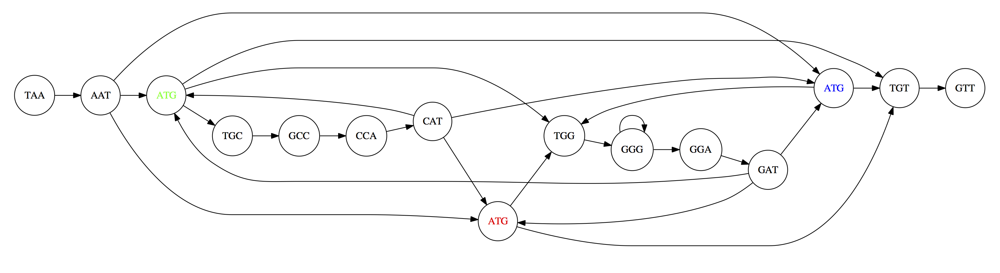
The three copies of ATG create ambiguity: multiple Hamiltonian paths exist, producing different genome reconstructions:
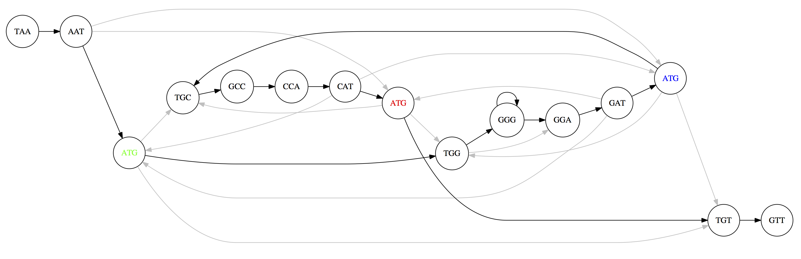
TAATGCCATGGGATGTT (top) and TAATGGGATGCCATGTT (bottom). Only one is correct.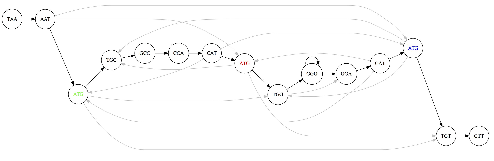
The problem: finding a Hamiltonian path is NP-complete—there is no efficient algorithm guaranteed to find the solution for large graphs. For a bacterial genome with millions of reads, this is computationally intractable.
6.2 De Bruijn Graphs and Eulerian Paths
Nicolaas de Bruijn (1918–2012) proposed a different graph representation that transforms the problem from NP-complete to efficiently solvable.
In a de Bruijn graph:
- Each edge represents a k-mer
- Each node represents a (k-1)-mer (the prefix or suffix of a k-mer)
- Two k-mers are connected if the suffix of one equals the prefix of the other
For the genome AAABBBBA with \(k = 3\):
3-mers: AAA, AAB, ABB, BBB, BBB, BBA
AA → AB → BB → BA
↺ ↺Each edge is a k-mer. Each node is a distinct (k-1)-mer:
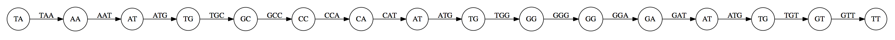
Identical nodes are glued together, simplifying the graph:
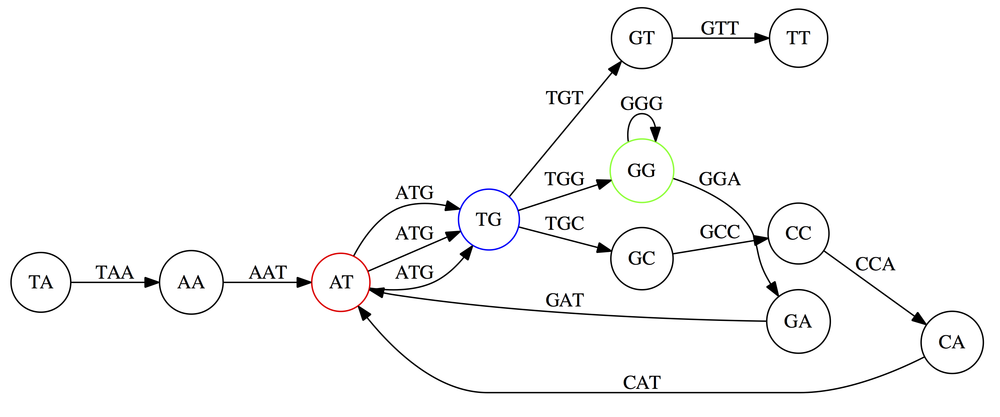
Reconstructing the genome now means finding a path that visits every edge exactly once—an Eulerian path:
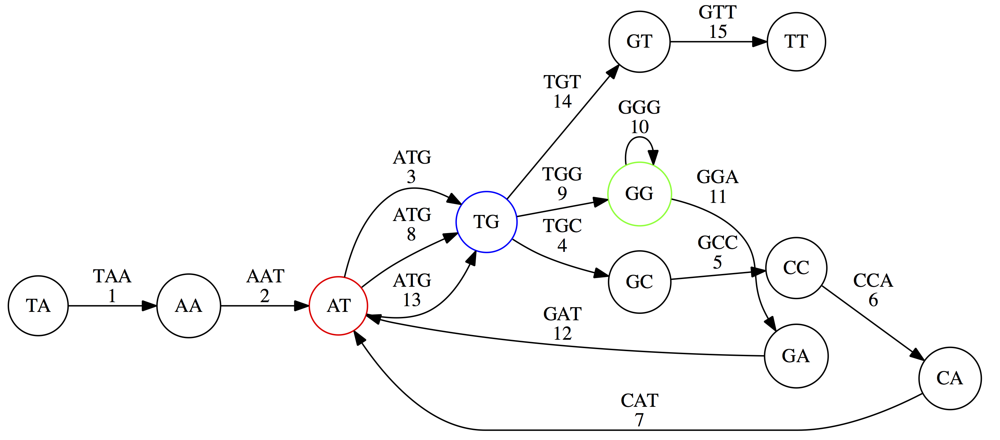
Unlike the Hamiltonian path problem, Euler proved in 1736 that Eulerian paths can be found efficiently.
A connected directed graph has an Eulerian path if and only if every node is balanced (number of incoming edges equals number of outgoing edges), with at most two exceptions (the start and end nodes). This can be checked and solved in linear time.
6.3 The Bridges of Konigsberg
Euler’s insight originated from a famous puzzle: can you walk through the city of Konigsberg (now Kaliningrad) crossing each of its seven bridges exactly once?
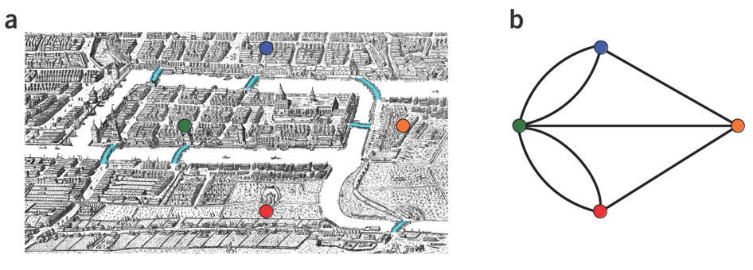
Euler proved this is impossible because all nodes in the graph have odd degree—an odd number of edges—so no Eulerian path exists. This was the birth of graph theory in 1736, and the same mathematics underlies modern genome assembly.
7. Overlap Graphs vs. De Bruijn Graphs
| Property | Overlap Graph | De Bruijn Graph |
|---|---|---|
| Nodes represent | Reads | (k-1)-mers |
| Edges represent | Overlaps between reads | k-mers |
| Assembly = finding | Hamiltonian path (visit every node once) | Eulerian path (visit every edge once) |
| Computational complexity | NP-complete | Linear time |
| Construction | All-vs-all pairwise comparison, O(n\(^2\)) | k-mer decomposition via hash tables |
| Best for | Long reads (ONT, PacBio) | Short reads (Illumina) |
| Repeat handling | Better—long reads span repeats | Sensitive to k-mer size |
| Error tolerance | More robust | Errors create spurious nodes/edges |
Modern short-read assemblers (SPAdes, MEGAHIT) use de Bruijn graphs. Long-read assemblers (Flye, Hifiasm) use overlap-based approaches, leveraging the fact that long reads can span most repeats directly.
Repeats also cause ambiguity in de Bruijn graphs. Without edge numbering, multiple Eulerian walks are possible:
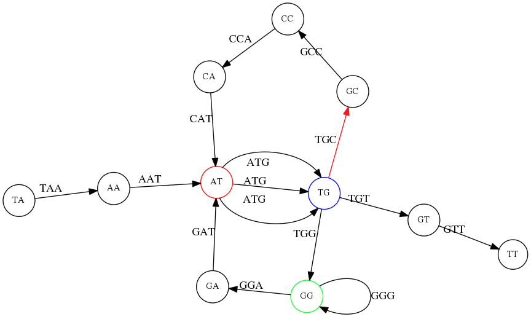
TG node we turn up first, producing TAATGCCATGGGATGTT.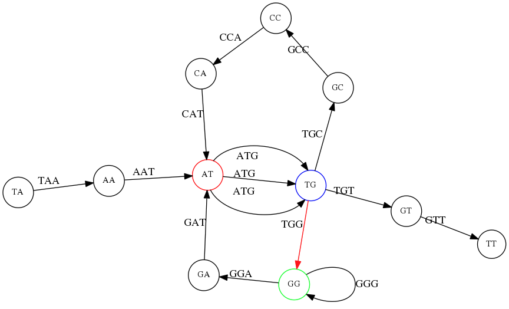
TG node we turn down first, producing TAATGGGATGCCATGTT. Only one of these is correct.8. K-mer Size and Repeat Resolution
The choice of \(k\) is critical for de Bruijn graph assembly. Repeats shorter than \(k\) are resolved; repeats longer than \(k\) create ambiguous paths.
For the genome TAATGCCATGGGATGTT with the repeated 3-mer ATG:
k = 3 — the de Bruijn graph has multiple Eulerian paths; the repeat is unresolved:
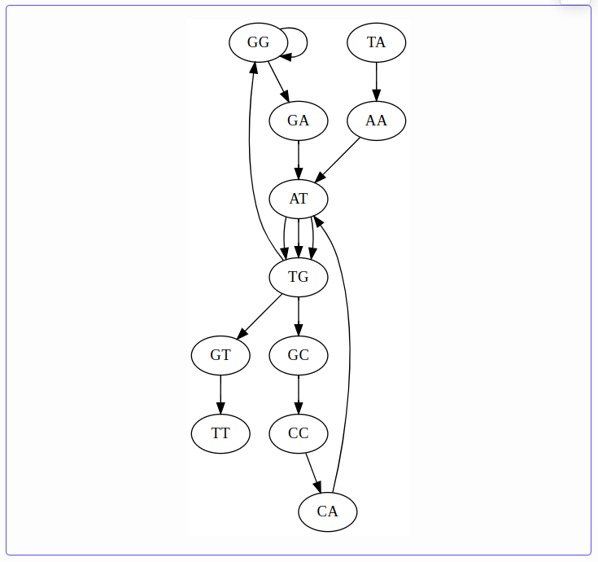
k = 4 — complexity decreases, but ambiguity remains:
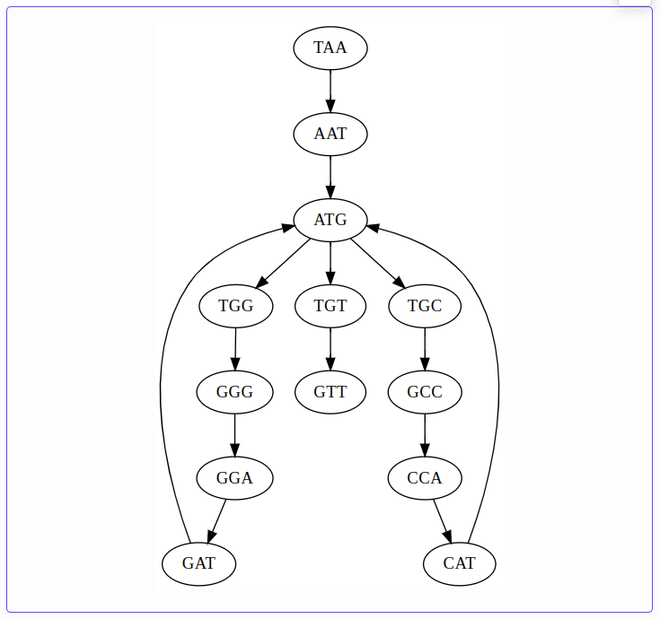
k = 5 — only one path exists; \(k\) exceeds the repeat length and the assembly is unambiguous:
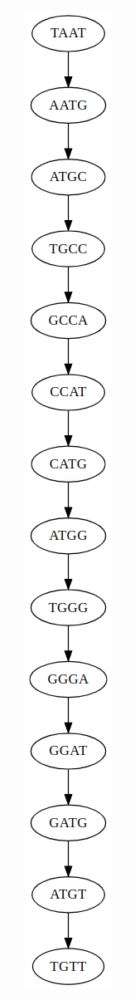
This is why longer reads are so valuable: they span repeats that short k-mers cannot resolve. Oxford Nanopore reads of 10–100 kb can span most bacterial repeats (insertion sequences ~1 kb, transposons ~5 kb, rRNA operons ~5 kb), enabling complete, single-contig assemblies.
- Larger k: resolves more repeats but requires higher coverage (fewer k-mers per read) and is more sensitive to sequencing errors
- Smaller k: tolerates lower coverage and errors but collapses repeats
- Modern assemblers use multiple k-mer sizes simultaneously to balance this trade-off
9. Assembly Quality Metrics
How do we evaluate an assembly? Three key terms:
- Contig — a contiguous sequence reconstructed from overlapping reads. An assembly typically consists of multiple contigs separated by gaps.
- Scaffold — an ordered set of contigs with estimated gap sizes between them. Scaffolding uses paired-end or long-read information to order and orient contigs.
- N50 — the length of the shortest contig such that contigs of that length or longer cover at least 50% of the total assembly. Higher N50 = more contiguous assembly.
To compute N50: sort contigs from longest to shortest, then cumulatively add their lengths. The contig that pushes the running total past 50% of the genome size is the N50.
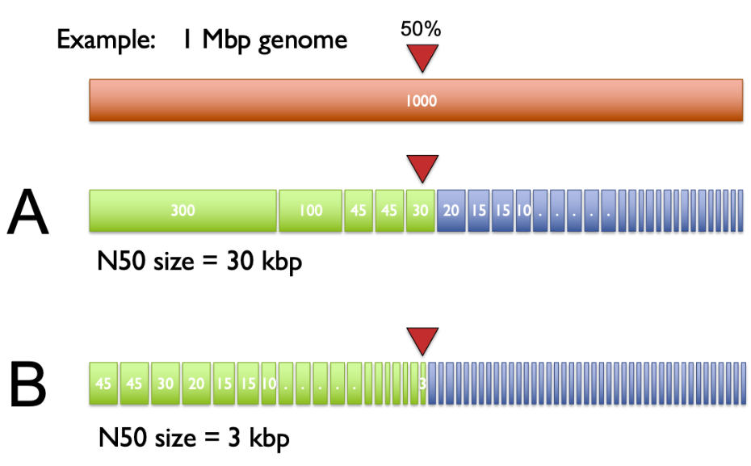
For a bacterial genome like S. aureus (~2.8 Mb):
- A short-read-only assembly might produce 50–200 contigs with N50 of 50–200 kb
- A long-read assembly with Flye typically produces 1–3 contigs with N50 equal to the chromosome length (~2.8 Mb)
The Flye assemblies you are running from Lecture 22 should ideally produce a single circular contig for the S. aureus chromosome (~2.8 Mb) plus separate small contigs for plasmids. We will evaluate your assembly results using these metrics in the next class.
10. Example: Assembling an MRSA Genome in Galaxy
To make this concrete, here is the workflow we followed to assemble one of the MRSA isolates from the Hisatsune et al. dataset using Galaxy.
10.1 Download and QC
We downloaded both Illumina (paired-end) and Oxford Nanopore (single-end) reads from SRA using the Faster Download and Extract Reads in FASTQ tool (see Lecture 22 for details). Illumina reads were quality-trimmed with fastp—removing adapters and filtering bases below Q20, as in our variant-calling pipeline.
10.2 Filtering Nanopore Reads with Filtlong
Raw Nanopore reads vary enormously in length and quality. Before assembly, we filter them with Filtlong—a tool designed specifically for this purpose.
Filtlong scores each long read using three criteria:
- Length — longer reads are more valuable because they span more repeats
- Mean quality — higher average quality scores are preferred
- Window quality — the worst-quality window in a read drags down its score (a single bad region makes the whole read less useful)
When Illumina reads are provided as a reference, Filtlong adds a fourth criterion: k-mer match — how well the long read’s k-mers match those found in the (more accurate) short reads. This provides an external quality signal independent of the Nanopore quality scores.
Filtlong then ranks all reads by their composite score and retains the best subset—either a target number of bases or reads above a minimum length threshold. In the GTN tutorial, we set a minimum length of 1,000 bp.
The effect is dramatic. Here is the read length distribution before filtering:
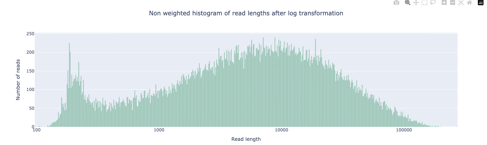
And after filtering:
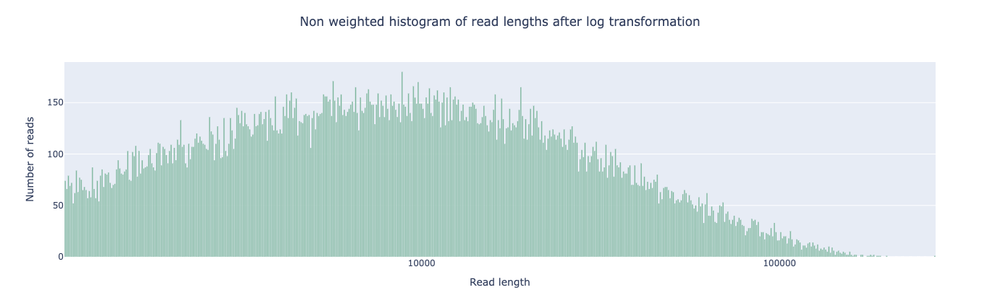
The short-read peak below ~500 bp is gone. These fragments are too short to contribute useful overlap information and would only add noise to the assembly graph. The remaining reads—concentrated in the 1–100 kb range—are long enough to span most S. aureus repeats.
10.3 Assembly with Flye
The filtered Nanopore reads were assembled with Flye in Nanopore corrected mode. For a typical S. aureus isolate, Flye produces a single circular contig (~2.8 Mb) for the chromosome plus 0–3 small contigs for plasmids. The draft assembly is then polished with the Illumina reads using BWA-MEM2 (alignment) followed by Polypolish (error correction), reducing the per-base error rate from ~1% (Nanopore-level) to <0.01% (Illumina-level).
11. Modern Assemblers
The theory above translates into real tools. This section surveys the major assemblers in current use, organized by the type of data they were designed for.
11.1 Short-Read Assemblers
SPAdes
SPAdes [4] builds multi-sized de Bruijn graphs—constructing graphs at multiple values of \(k\) and merging them. This addresses the fundamental trade-off: small \(k\) captures low-coverage regions while large \(k\) resolves repeats. SPAdes iteratively increases \(k\) and uses paired-end information (k-bimers) to bridge gaps. Originally designed for single-cell sequencing (where coverage is extremely uneven due to MDA amplification bias), SPAdes became the default short-read assembler for bacterial genomes. Variants include metaSPAdes for metagenomics and rnaSPAdes for transcriptome assembly.
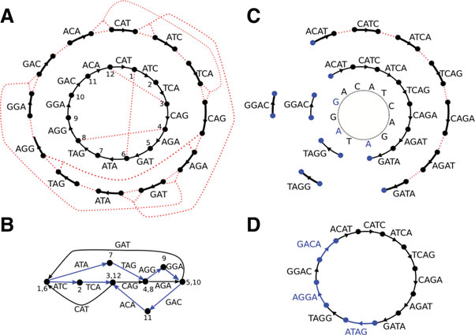
Minia
Minia [18] demonstrated that a de Bruijn graph for an entire human genome can be stored in constant memory (~5.7 GB) using a Bloom filter—a probabilistic data structure that tests set membership without storing the elements themselves. False positives (phantom k-mers not in the data) are handled by a small auxiliary “critical false positive” table. This made Minia the first assembler capable of assembling a human genome on a desktop computer. While Minia’s output (unitigs/contigs) is less polished than SPAdes, its memory-efficient representation was foundational—the same Bloom filter approach influenced MEGAHIT’s succinct de Bruijn graph and the broader GATB (Genome Assembly & Analysis Tool Box) library.
MEGAHIT
MEGAHIT [5] uses a succinct de Bruijn graph (SdBG)—a compressed representation that dramatically reduces memory consumption. Like SPAdes, it iterates over multiple \(k\)-mer sizes. MEGAHIT assembled a 252 Gbp soil metagenome on a single compute node, making it the tool of choice for large-scale metagenome assembly on limited hardware.
11.2 Long-Read Assemblers
Canu
Canu [6] follows the classic Overlap-Layout-Consensus (OLC) paradigm in three explicit stages: correct reads, trim low-quality regions, then assemble. Its key innovation is adaptive k-mer weighting—inspired by tf-idf from information retrieval—which downweights repetitive k-mers during overlap detection so that unique overlaps dominate.
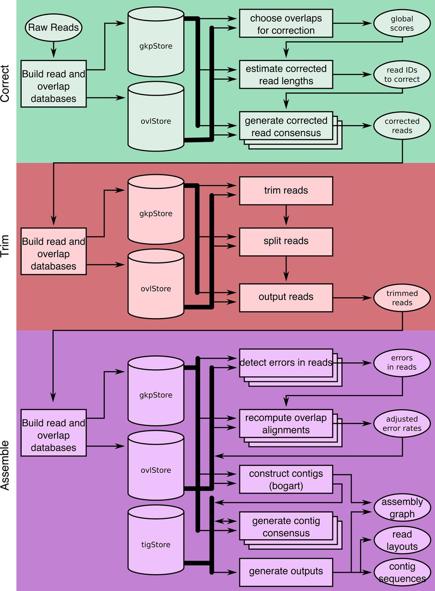
Flye
Flye [3] takes a fundamentally different approach: it skips error correction entirely and instead builds a repeat graph directly from noisy reads. Flye first generates “disjointigs”—arbitrary concatenations of reads that traverse the genome—then identifies repeats by self-alignment and constructs a graph where edges represent unique or repetitive genomic segments. Reads are then aligned back to the graph to resolve which repeat copies connect to which unique regions.
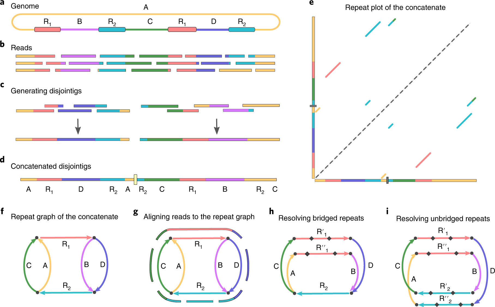
This approach is an order of magnitude faster than correct-then-assemble methods like Canu. Flye is the assembler you used in Lecture 22 for your MRSA data.
Miniasm
Miniasm [7] implements the most extreme version of OLC: overlap and layout only, no consensus. It takes raw overlaps from minimap and produces an assembly graph in minutes—a bacterial genome assembles in seconds. The output is unpolished (error rate matches the reads), so miniasm is typically paired with Racon or Medaka for polishing. Miniasm is used as a building block inside other tools like Unicycler and Autocycler.
Shasta
Shasta [8] uses a modified OLC approach with run-length encoding—compressing homopolymers before overlap detection, which eliminates the most common Nanopore error type. Shasta assembled a complete human genome from Nanopore reads in under 6 hours on a single machine.
NextDenovo
NextDenovo [9] uses a two-module correct-then-assemble strategy (NextCorrect + NextGraph) with a string graph approach. It achieves comparable or better results than Canu at significantly lower computational cost, making it a strong choice for large-scale long-read assembly projects.
11.3 HiFi-Specific Assemblers
PacBio HiFi reads (>99% accuracy, 10–20 kb) have spawned assemblers that exploit their low error rate.
Hifiasm
Hifiasm [10] builds a phased assembly graph that preserves haplotype information throughout the assembly process. Standard assemblers collapse heterozygous alleles; hifiasm keeps them separate. It performs haplotype-aware error correction that fixes sequencing errors while preserving true heterozygous variants, then constructs a graph where reads from the same haplotype connect to each other. With trio data (parental short reads) or Hi-C data, hifiasm produces fully phased diploid assemblies.
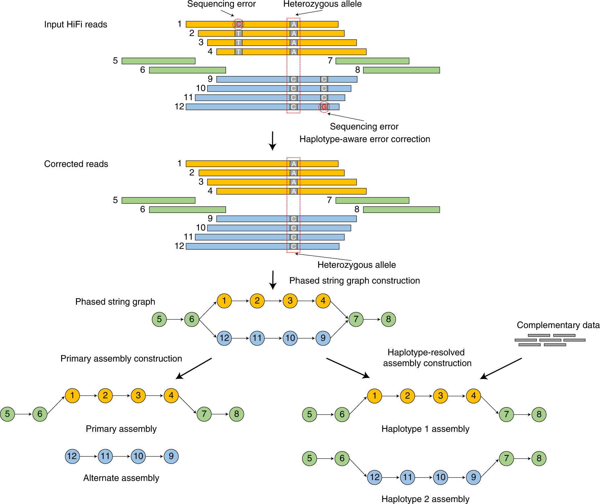
LJA (La Jolla Assembler)
LJA [11] uses a multiplex de Bruijn graph that adapts \(k\)-mer size locally across the graph—using smaller \(k\) in low-complexity regions and larger \(k\) near repeats. LJA reduces the HiFi read error rate by three orders of magnitude before graph construction, producing five-fold fewer misassemblies than other HiFi assemblers.
11.4 Hybrid and T2T Assemblers
MaSuRCA
MaSuRCA [16] (Maryland Super-Read Celera Assembler) takes a unique approach to hybrid assembly: it converts short paired-end reads into super-reads—longer, highly accurate synthetic reads constructed by extending each read in both directions using the de Bruijn graph until a branch point is reached [17]. When long reads (PacBio or ONT) are available, MaSuRCA further combines super-reads with long reads to create mega-reads—long reads with short-read accuracy. The mega-reads are then assembled using a modified OLC assembler (CABOG). This approach has been particularly successful for large, repetitive plant genomes—MaSuRCA assembled the 4.3 Gb Aegilops tauschii (bread wheat progenitor) genome with an N50 of 487 kb.
Verkko
Verkko [12] combines HiFi and ONT ultra-long reads to achieve telomere-to-telomere (T2T) phased diploid assembly. It builds a multiplex de Bruijn graph from HiFi reads, then uses ONT ultra-long reads (>100 kb) to traverse tangles and bubbles in the graph. Haplotype markers from trio or Hi-C data separate maternal and paternal paths.
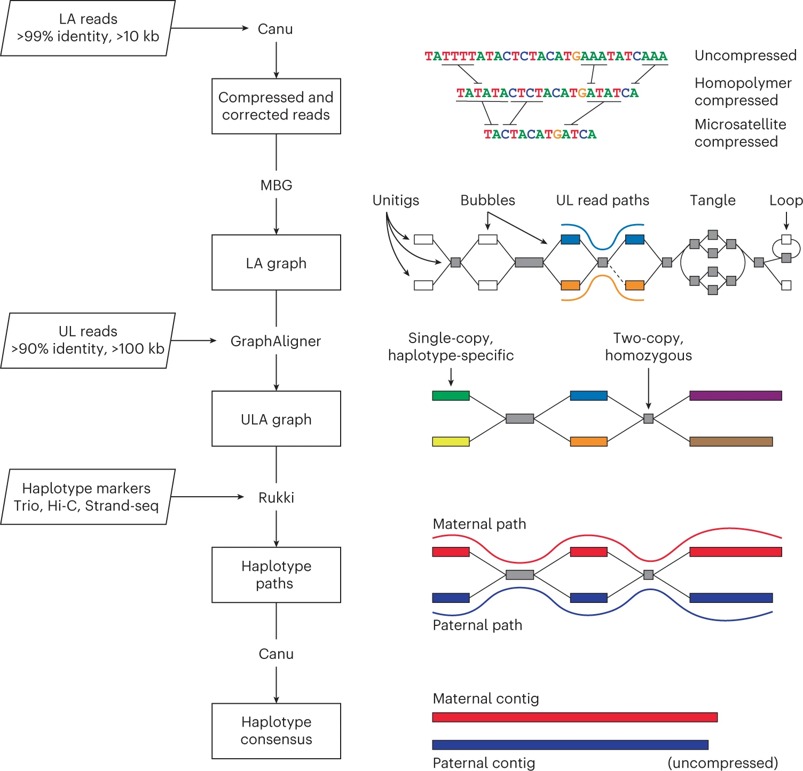
Verkko assembled 20 of 46 diploid human chromosomes gap-free in its original publication. It is the assembler behind many of the T2T reference genomes being produced by the Human Pangenome Reference Consortium.
Hybracter
Hybracter [13] is an automated pipeline (not a novel algorithm) that orchestrates Flye for long-read assembly, then polishes with short reads if available. It automatically classifies contigs as chromosome vs. plasmid and recovers small plasmids that other assemblers miss. Hybracter is designed for bacterial genomics at scale—processing hundreds of isolates with minimal user input.
11.5 Consensus Assemblers
Autocycler
Autocycler [14] takes a consensus meta-assembly approach: it runs multiple assemblers (Flye, miniasm, etc.) on subsampled read sets, then builds a compacted de Bruijn graph from the resulting assemblies and derives a consensus. The key insight, demonstrated by its predecessor Trycycler [15]: combining multiple assembly attempts produces lower error rates than any single assembler. Autocycler automates this process entirely (Trycycler required manual curation). Written in Rust for performance.
11.6 Summary Table
| Assembler | Algorithm | Input data | Best for |
|---|---|---|---|
| SPAdes [4] | Multi-sized de Bruijn graph | Illumina | Bacterial/small genomes, single-cell |
| Minia [18] | Bloom filter de Bruijn graph | Illumina | Memory-limited, large genomes |
| MEGAHIT [5] | Succinct de Bruijn graph | Illumina | Metagenomes, memory-limited |
| Canu [6] | OLC with tf-idf weighting | ONT, PacBio | Accurate long-read assembly |
| Flye [3] | Repeat graph | ONT, PacBio | Fast long-read assembly, bacteria to human |
| Miniasm [7] | OLC (no consensus) | ONT, PacBio | Ultra-fast draft assemblies |
| Shasta [8] | OLC with run-length encoding | ONT | Fast Nanopore-only, large genomes |
| NextDenovo [9] | String graph | ONT, PacBio | Cost-effective long-read assembly |
| Hifiasm [10] | Phased assembly graph | PacBio HiFi | Haplotype-resolved diploid genomes |
| LJA [11] | Multiplex de Bruijn graph | PacBio HiFi | Lowest misassembly rate |
| MaSuRCA [16] | Super-reads/mega-reads + OLC | Illumina +/- ONT/PacBio | Large, repetitive genomes (plants) |
| Verkko [12] | Hybrid de Bruijn + OLC | HiFi + ONT UL | T2T phased diploid assembly |
| Hybracter [13] | Pipeline (Flye + polishing) | ONT +/- Illumina | Automated bacterial assembly |
| Autocycler [14] | Consensus meta-assembly | ONT | Highest-accuracy bacterial genomes |
- Genome assembly reconstructs a genome from scrambled reads—a puzzle without the picture
- Three laws: overlaps imply co-location; higher coverage is better; repeats are evil
- Overlap graphs represent reads as nodes and overlaps as edges; assembly requires finding a Hamiltonian path (NP-complete)
- De Bruijn graphs represent k-mers as edges and (k-1)-mers as nodes; assembly requires finding an Eulerian path (linear time)
- Larger k resolves more repeats but needs more coverage; smaller k tolerates errors but collapses repeats
- Long reads (ONT, PacBio) span repeats that short reads cannot resolve, enabling complete assemblies
- N50 measures assembly contiguity: the contig length at which 50% of the genome is covered
- Modern assemblers span a wide range: de Bruijn graph (SPAdes, MEGAHIT), OLC/repeat graph (Canu, Flye), phased graphs (hifiasm), and hybrid approaches (Verkko) for T2T assembly
References
- Langmead, B. Assembly & Shortest Common Superstring and De Bruijn Graph Assembly. Lecture notes, Johns Hopkins University.
- Compeau, P.E.C. et al. (2011). How to apply de Bruijn graphs to genome assembly. Nature Biotechnology, 29, 987–991.
- Kolmogorov, M. et al. (2019). Assembly of long, error-prone reads using repeat graphs. Nature Biotechnology, 37, 540–546.
- Bankevich, A. et al. (2012). SPAdes: A new genome assembly algorithm and its applications to single-cell sequencing. Journal of Computational Biology, 19(5), 455–477.
- Li, D. et al. (2015). MEGAHIT: an ultra-fast single-node solution for large and complex metagenomics assembly via succinct de Bruijn graph. Bioinformatics, 31(10), 1674–1676.
- Koren, S. et al. (2017). Canu: scalable and accurate long-read assembly via adaptive k-mer weighting and repeat separation. Genome Research, 27(5), 722–736.
- Li, H. (2016). Minimap and miniasm: fast mapping and de novo assembly for noisy long sequences. Bioinformatics, 32(14), 2103–2110.
- Shafin, K. et al. (2020). Nanopore sequencing and the Shasta toolkit enable efficient de novo assembly of eleven human genomes. Nature Biotechnology, 38, 1044–1053.
- Hu, J. et al. (2024). NextDenovo: an efficient error correction and accurate assembly tool for noisy long reads. Genome Biology, 25, 107.
- Cheng, H. et al. (2021). Haplotype-resolved de novo assembly using phased assembly graphs with hifiasm. Nature Methods, 18, 170–175.
- Bankevich, A. et al. (2022). Multiplex de Bruijn graphs enable genome assembly from long, high-fidelity reads. Nature Biotechnology, 40, 1075–1081.
- Rautiainen, M. et al. (2023). Telomere-to-telomere assembly of diploid chromosomes with Verkko. Nature Biotechnology, 41, 1474–1482.
- Bouras, G. et al. (2024). Hybracter: enabling scalable, automated, complete and accurate bacterial genome assemblies. Microbial Genomics, 10, 001244.
- Wick, R.R. et al. (2025). Autocycler: long-read consensus assembly for bacterial genomes. Bioinformatics, 41(9), btaf474.
- Wick, R.R. et al. (2021). Trycycler: consensus long-read assemblies for bacterial genomes. Genome Biology, 22, 266.
- Zimin, A.V. et al. (2013). The MaSuRCA genome assembler. Bioinformatics, 29(21), 2669–2677.
- Zimin, A.V. et al. (2017). Hybrid assembly of the large and highly repetitive genome of Aegilops tauschii, a progenitor of bread wheat, with the MaSuRCA mega-reads algorithm. Genome Research, 27(5), 787–792.
- Chikhi, R. & Rizk, G. (2013). Space-efficient and exact de Bruijn graph representation based on a Bloom filter. Algorithms in Molecular Biology, 8, 22.